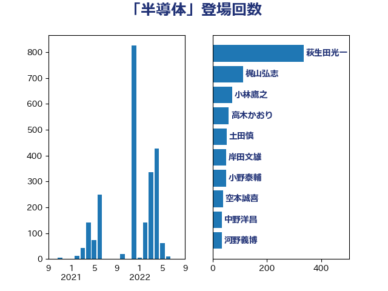

単語「半導体」

| 萩生田光一 | 自由民主党 | 335 回 |
| 梶山弘志 | 自由民主党 | 112 回 |
| 小林鷹之 | 自由民主党 | 72 回 |
| 高木かおり | 日本維新の会 | 60 回 |
| 土田慎 | 自由民主党 | 52 回 |
| 岸田文雄 | 自由民主党 | 51 回 |
| 小野泰輔 | 日本維新の会 | 50 回 |
| 空本誠喜 | 日本維新の会 | 38 回 |
| 中野洋昌 | 公明党 | 34 回 |
| 河野義博 | 公明党 | 34 回 |
| 岩渕友 | 日本共産党 | 33 回 |
| 礒崎哲史 | 国民民主党 | 31 回 |
| 大石あきこ | れいわ新選組 | 30 回 |
| 荒井優 | 立憲民主党 | 29 回 |
| 宮本周司 | 自由民主党 | 28 回 |
| 田村智子 | 日本共産党 | 27 回 |
| 落合貴之 | 立憲民主党 | 26 回 |
| 大島敦 | 立憲民主党 | 24 回 |
| 安達澄 | 無所属 | 24 回 |
| 笠井亮 | 日本共産党 | 24 回 |
| 長坂康正 | 自由民主党 | 23 回 |
| 西野太亮 | 自由民主党 | 21 回 |
| 漆間譲司 | 日本維新の会 | 20 回 |
| 浅野哲 | 国民民主党 | 19 回 |
| 鈴木義弘 | 国民民主党 | 17 回 |
| 山本左近 | 自由民主党 | 15 回 |
| 東徹 | 日本維新の会 | 14 回 |
| 浜口誠 | 国民民主党 | 14 回 |
| 青柳仁士 | 日本維新の会 | 14 回 |
| 森本真治 | 立憲民主党 | 11 回 |
| 塩川鉄也 | 日本共産党 | 10 回 |
| 小倉將信 | 自由民主党 | 10 回 |
| 末松信介 | 自由民主党 | 9 回 |
| 石井正弘 | 自由民主党 | 9 回 |
| 小沼巧 | 立憲民主党 | 8 回 |
| 田嶋要 | 立憲民主党 | 8 回 |
| 高橋はるみ | 自由民主党 | 8 回 |
| 宮本徹 | 日本共産党 | 7 回 |
| 平林晃 | 公明党 | 7 回 |
| 本庄知史 | 立憲民主党 | 7 回 |
| 柴田巧 | 日本維新の会 | 7 回 |
| 大西健介 | 立憲民主党 | 6 回 |
| 有村治子 | 自由民主党 | 6 回 |
| 浅田均 | 日本維新の会 | 6 回 |
| 石川博崇 | 公明党 | 6 回 |
| 石橋通宏 | 立憲民主党 | 6 回 |
| 三木圭恵 | 日本維新の会 | 5 回 |
| 吉田宣弘 | 公明党 | 5 回 |
| 国光あやの | 自由民主党 | 5 回 |
| 片山さつき | 自由民主党 | 5 回 |
| 菅義偉 | 自由民主党 | 5 回 |
| 高市早苗 | 自由民主党 | 5 回 |
| 古屋範子 | 公明党 | 4 回 |
| 吉川ゆうみ | 自由民主党 | 4 回 |
| 大塚耕平 | 国民民主党 | 4 回 |
| 大野敬太郎 | 自由民主党 | 4 回 |
| 山際大志郎 | 自由民主党 | 4 回 |
| 梅村みずほ | 日本維新の会 | 4 回 |
| 石川昭政 | 自由民主党 | 4 回 |
| 篠原豪 | 立憲民主党 | 4 回 |
| 茂木敏充 | 自由民主党 | 4 回 |
| 西田昌司 | 自由民主党 | 4 回 |
| 足立康史 | 日本維新の会 | 4 回 |
| 鈴木俊一 | 自由民主党 | 4 回 |
| 鈴木敦 | 国民民主党 | 4 回 |
| ながえ孝子 | 無所属 | 3 回 |
| 中山展宏 | 自由民主党 | 3 回 |
| 中川貴元 | 自由民主党 | 3 回 |
| 中谷真一 | 自由民主党 | 3 回 |
| 國重徹 | 公明党 | 3 回 |
| 太栄志 | 立憲民主党 | 3 回 |
| 太田房江 | 自由民主党 | 3 回 |
| 小西洋之 | 立憲民主党 | 3 回 |
| 山本香苗 | 公明党 | 3 回 |
| 志位和夫 | 日本共産党 | 3 回 |
| 本田顕子 | 自由民主党 | 3 回 |
| 森屋宏 | 自由民主党 | 3 回 |
| 江島潔 | 自由民主党 | 3 回 |
| 浦野靖人 | 日本維新の会 | 3 回 |
| 甘利明 | 自由民主党 | 3 回 |
| 石井啓一 | 公明党 | 3 回 |
| 石井章 | 日本維新の会 | 3 回 |
| 石川大我 | 立憲民主党 | 3 回 |
| 緒方林太郎 | 無所属 | 3 回 |
| 伊佐進一 | 公明党 | 2 回 |
| 伊藤孝恵 | 国民民主党 | 2 回 |
| 前原誠司 | 国民民主党 | 2 回 |
| 城井崇 | 立憲民主党 | 2 回 |
| 塩田博昭 | 公明党 | 2 回 |
| 山口壯 | 自由民主党 | 2 回 |
| 山岡達丸 | 立憲民主党 | 2 回 |
| 山添拓 | 日本共産党 | 2 回 |
| 平将明 | 自由民主党 | 2 回 |
| 杉尾秀哉 | 立憲民主党 | 2 回 |
| 松島みどり | 自由民主党 | 2 回 |
| 池田佳隆 | 自由民主党 | 2 回 |
| 熊谷裕人 | 立憲民主党 | 2 回 |
| 片山大介 | 日本維新の会 | 2 回 |
| 玉木雄一郎 | 国民民主党 | 2 回 |
| 矢倉克夫 | 公明党 | 2 回 |
| 石垣のりこ | 立憲民主党 | 2 回 |
| 竹内真二 | 公明党 | 2 回 |
| 藤巻健太 | 日本維新の会 | 2 回 |
| 角田秀穂 | 公明党 | 2 回 |
| 野上浩太郎 | 自由民主党 | 2 回 |
| 青山繁晴 | 自由民主党 | 2 回 |
| こやり隆史 | 自由民主党 | 1 回 |
| 中西祐介 | 自由民主党 | 1 回 |
| 佐藤茂樹 | 公明党 | 1 回 |
| 和田政宗 | 自由民主党 | 1 回 |
| 国定勇人 | 自由民主党 | 1 回 |
| 大家敏志 | 自由民主党 | 1 回 |
| 山崎正恭 | 公明党 | 1 回 |
| 山崎誠 | 立憲民主党 | 1 回 |
| 岡田克也 | 立憲民主党 | 1 回 |
| 工藤彰三 | 自由民主党 | 1 回 |
| 市村浩一郎 | 日本維新の会 | 1 回 |
| 平木大作 | 公明党 | 1 回 |
| 後藤茂之 | 自由民主党 | 1 回 |
| 朝日健太郎 | 自由民主党 | 1 回 |
| 本田太郎 | 自由民主党 | 1 回 |
| 林芳正 | 自由民主党 | 1 回 |
| 榛葉賀津也 | 国民民主党 | 1 回 |
| 河野太郎 | 自由民主党 | 1 回 |
| 泉健太 | 立憲民主党 | 1 回 |
| 滝波宏文 | 自由民主党 | 1 回 |
| 田村まみ | 国民民主党 | 1 回 |
| 田村憲久 | 自由民主党 | 1 回 |
| 石原宏高 | 自由民主党 | 1 回 |
| 石原正敬 | 自由民主党 | 1 回 |
| 稲津久 | 公明党 | 1 回 |
| 竹内譲 | 公明党 | 1 回 |
| 緑川貴士 | 立憲民主党 | 1 回 |
| 藤岡隆雄 | 立憲民主党 | 1 回 |
| 西岡秀子 | 国民民主党 | 1 回 |
| 西村康稔 | 自由民主党 | 1 回 |
| 西田実仁 | 公明党 | 1 回 |
| 輿水恵一 | 公明党 | 1 回 |
| 阿部司 | 日本維新の会 | 1 回 |
| 青山周平 | 自由民主党 | 1 回 |
| 青山大人 | 立憲民主党 | 1 回 |
| 音喜多駿 | 日本維新の会 | 1 回 |
| 麻生太郎 | 自由民主党 | 1 回 |
| 黄川田仁志 | 自由民主党 | 1 回 |